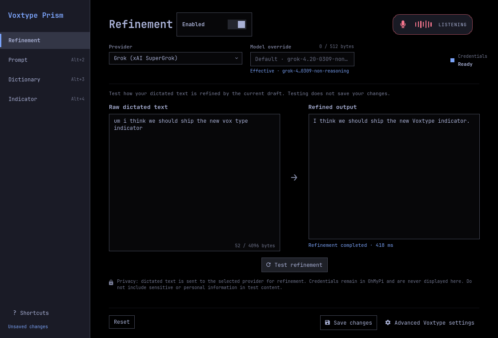

Built and deployed · Option 1
Refinement Workbench is now the real Voxtype configuration surface.
These are production QML captures using the installed Omarchy design system and your redacted live settings. Switch tabs to inspect the entire workbench. The successful transcript is presentation-only test data; no provider request was made.
Installed io.github.jonhenshaw.voxtype-prism
Launcher Separate Voxtype Prism entry
Window floating · 1120 × 760
Tests 118 passing
Network tailnet only

Indicator studio
The preview and on-screen runtime share the same renderer. Try the three curated directions below; every control shown is functional.
What is live
- Grok, Anthropic, OpenAI Codex, and local refinement providers
- Prompt and dictionary editors with byte limits
- Conflict-safe, journaled multi-file saves
- Dirty-close protection and stock Voxtype escape hatch
- Separate Quick Shell entry; native Voxtype settings preserved